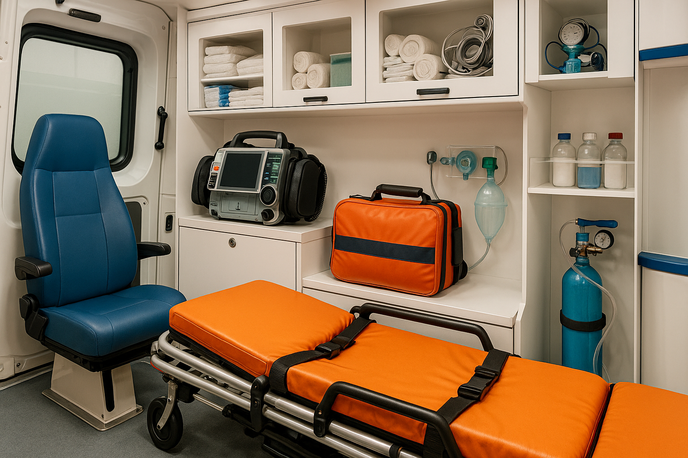
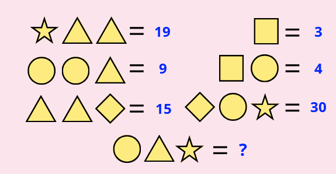
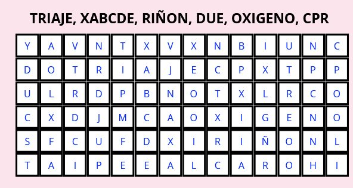
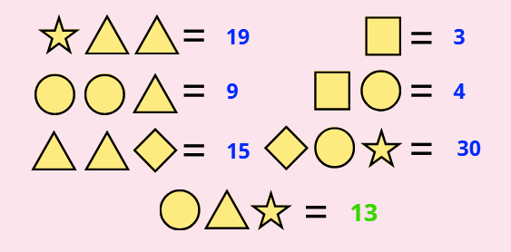
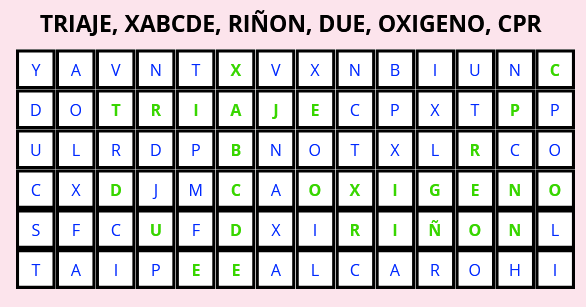

¡No te lo pierdas!
🤖 IA en Cataluña mejora emergencias sanitarias
En Cataluña, la inteligencia artificial tiene aplicaciones para prever picos de urgencias y redistribuir ambulancias, mejorando la rapidez y eficiencia en emergencias sanitarias. Una innovación clave para optimizar recursos y garantizar atención ágil en toda la región.
🚑 Universidad mexicana fortalece su hospital con nuevas ambulancias
La Universidad de Guadalajara ha reforzado el sistema de urgencias del Hospital Civil al entregar tres ambulancias equipadas con tecnología avanzada. Estas unidades están preparadas para atender a pacientes en estado crítico y se espera que realicen más de 9.000 traslados al año, mejorando significativamente la cobertura de emergencias en la región.
👶 Heroína a bordo: auxiliar salva la vida de un bebé en pleno vuelo
Durante un vuelo comercial, una auxiliar de una residencia actuó rápidamente cuando un bebé dejó de respirar. Utilizando sus conocimientos en primeros auxilios, comenzó maniobras de reanimación y logró que el pequeño recuperara el pulso antes del aterrizaje. Su intervención salvadora fue aplaudida por todo el avión.
📈 Crece el empleo en España y el sector sanitario se fortalece
En mayo de 2025, España registró cifras históricas de empleo, reflejando una mejora económica generalizada. Esto también ha repercutido positivamente en el ámbito sanitario, donde ha habido más contrataciones y mejoras en recursos para servicios como las ambulancias y la atención prehospitalaria.
Tecnología para emergencias
🌍 Super traductor
"Traductor de Google"
Traduce por voz, texto e imágenes. Ideal para atender pacientes de otros idiomas. Detecta idioma automáticamente. ¡Sin anuncios!
🌦 Clima
"Alarma de lluvia"
Te alerta sobre lluvia y condiciones climáticas. Muestra la intensidad por colores. Muy útil para ambulancias móviles.
🔐 Simulador Realista
"AppLock Bloqueo Aplicaciones"
Permite dejar el teléfono desbloqueado y proteger apps con contraseña. Seguridad sin sacrificar rapidez.
¿CÓMO RESOLVERÍAS ESTE CASO?
Activación del caso:
Se recibe un aviso para asistir a un hombre de 24 años con autismo que ha sufrido una caída en su domicilio. Los padres están preocupados por posibles lesiones, ya que el paciente no puede comunicarse verbalmente, y solicitan atención inmediata.
Evaluación inicial:
El equipo médico realiza una observación detallada del estado general del paciente, prestando atención a signos externos de lesión y su respuesta a estímulos, mientras crea un ambiente tranquilo y seguro para reducir el estrés.
Información adicional:
Los padres informan que el paciente tiene alergia al caucho natural. Además, mencionan que el paciente responde positivamente a estímulos visuales y auditivos relajantes. Según los familiares, la caída ocurrió al tropezar con un objeto en el pasillo, y temen que la muñeca izquierda pueda haberse visto afectada.
Reflexiona y responde:
- ¿Cómo evaluarías las lesiones de un paciente que no puede comunicarse verbalmente?
- ¿Qué estrategias usarías para tranquilizar al paciente y a sus familiares durante la atención?
- ¿Qué métodos o materiales emplearías para inmovilizar la muñeca del paciente en este caso?
¿CÓMO RESOLVERÍAS ESTE CASO?
victor034
===============
Solución del caso resumida en SVB:
- XABCDE: Realiza una evaluación inicial para descartar sangrados, asegurar la vía aérea y valorar respiración, circulación, estado neurológico y lesiones externas. Mantén al paciente abrigado para evitar hipotermia. Para evaluar el dolor, utilizar la escala EVA con emoticonos.
- Valoración secundaria: Examina detalladamente la muñeca afectada, buscando signos como hinchazón o deformidades, e inspecciona el lugar de la caída para identificar posibles factores causantes.
- Abordaje central: Inmoviliza la muñeca utilizando materiales seguros, evitando el uso de látex debido a su composición de caucho natural. Opta por férulas de plástico, vendajes sintéticos hipoalergénicos o materiales improvisados como cartón rígido.
- Apoyo psicológico: Mantén al paciente tranquilo mediante estímulos visuales o auditivos relajantes como la música. Comunica a los familiares de manera calmada y clara cada paso del procedimiento.
- Transporte y comunicación: Traslada al paciente al hospital mientras monitorizas su estado. Informa al hospital sobre la alergia al caucho natural y las observaciones iniciales para que puedan prepararse adecuadamente.
A tener en cuenta para SVA:
-
Medicación:
- Administra analgésicos intravenosos seguros, evitando aquellos con embalajes derivados del caucho.
- Considera antiinflamatorios o relajantes musculares bajo supervisión médica para aliviar dolor e inflamación.
Datos Curiosos
¿Verdadero o falso?
HISTORIA
Dominique Jean Larrey
Dominique Jean Larrey fue un cirujano francés que dejó su marca en la historia durante las Guerras Napoleónicas. Se le atribuye la creación de las “ambulancias volantes", un sistema que consistía en carretas ligeras tiradas por caballos diseñadas para recoger a los heridos directamente del campo de batalla.
Este concepto innovador permitió acelerar la atención médica de los soldados, sentando las bases para lo que hoy conocemos como ambulancias modernas.
Además, Larrey desarrolló el primer “sistema de triaje” en la historia médica, que priorizaba la atención de los heridos según la gravedad de sus lesiones, sin importar su rango militar.
Este método humanitario y eficiente garantizaba que los recursos médicos se destinaran a aquellos con mayores posibilidades de sobrevivir. Su enfoque, tanto práctico como empático, todavía forma parte esencial de los protocolos médicos de emergencia actuales.
Larrey no solo revolucionó la medicina militar de su tiempo, sino que también estableció principios que han perdurado y evolucionado hasta convertirse en pilares fundamentales de los sistemas médicos contemporáneos.
Ambulancias + Triaje
Ambulancia Interactiva con Humor

🧠 Juegos Mentales
¡Ponte a prueba! Aquí tienes dos juegos para activar tu mente. 🔍✍️


¿Conseguiste resolverlos todos? 🧩 ¡Desafía a un compañero!
🧠 Juegos Mentales
SOLUCIÓN


¿Conseguiste resolverlos todos? 🧩 ¡Desafía a un compañero!
📘 GUÍA
¡TE LO RESUMIMOS!

📘 GUÍA
¡TE LO RESUMIMOS!

📘 GUÍA
¡TE LO RESUMIMOS!

El misterio de las gotas rojas
Resumen breve del caso:
ACTUACIÓN SVB RESUMIDA:
- XABCDE:
- X (Exsanguinación): Verifica que no hay sangrados masivos o heridas externas. Las gotas rojas se identifican como sudor mezclado con sangre.
- A (Vía aérea): La vía aérea está libre, sin signos de obstrucción.
- B (Respiración): El patrón respiratorio es normal, no se observan dificultades.
- C (Circulación): Los signos vitales son estables, con un pulso radial adecuado.
- D (Neurológica): La paciente está consciente, orientada y colaborativa.
- E (Exposición): Inspecciona completamente el cuerpo y confirma que las gotas rojas provienen de los poros, sin lesiones asociadas.
- Valoración secundaria:
- Indaga antecedentes médicos, episodios similares y posibles desencadenantes como estrés extremo.
- Realiza una revisión minuciosa de las áreas afectadas para descartar patologías subyacentes visibles.
- Abordaje central:
- Monitorización básica de constantes vitales durante el traslado.
- Apoyo psicológico:
- Reasegura a la paciente manteniendo la calma y explicando que sus constantes vitales son normales.
- Ofrece comunicación clara y empática para reducir su preocupación.
- Transporte y comunicación:
- Traslada en posición cómoda (semifowler) para maximizar su tranquilidad.
- Comunica al hospital el caso, detallando el episodio de hematohidrosis y el estado actual de la paciente.
SOLUCIÓN Nº ANTERIOR
El enigma de la abuela congelada en pleno verano
Resumen breve del caso:
VALORACIÓN INICIAL:
- Signos vitales estables.
- Temperatura corporal anormalmente baja -35ºC
- Piel fría y tensa.
- Sin heridas visibles ni alteraciones respiratorias.
PREGUNTAS PARA REFLEXIONAR:
- ¿Qué crees que tiene esta paciente?
- ¿En qué posición la llevarías en la ambulancia y por qué?
- ¿Qué medios materiales usarías para el traslado? ¿Alguna medida excepcional?
- ¿Activarías Soporte Avanzado?
¡Comparte tu opinión!
Las respuestas más interesantes y completas serán publicadas en la próxima edición de nuestra revista.
Envíalas a: tesambulancias7@gmail.com o por redes a @tes_ambulancias.
¡Queremos conocer tu opinión!